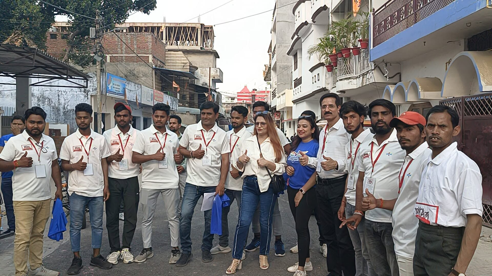

About us
The story, the values and the people behind Madhayam Samajik Sanstha.
What we are working toward
Our vision
The attainment of a healthy and self-reliant village community, through the process of nurturing integration, unity, peace and harmony, optimum utilisation of available resources, and institution building with a participatory approach.
Our mission
Long range, holistic development by creating a knowledgeable society: providing quality health services, education and vocational skills that lead into self-employment or employment, creating more job avenues, and advancing women's empowerment and agricultural development. Within this framework, we are committed to working toward a synergy of different inputs as necessary for a people-centred development strategy.
From a single idea to a working presence in Lucknow
Madhayam Samajik Sanstha has grown steadily since its founding, always staying close to the communities it set out to serve.

Madhayam Samajik Sanstha is founded
The organisation is established and registered, with its office based in Indira Nagar, Lucknow, Uttar Pradesh, and a clear focus on the holistic development of marginalised and disadvantaged communities.
Eight programmes, one grassroots approach
Over the years, our work has grown into eight connected areas: women's empowerment, education, vocational training, health and nutrition, micro-finance and self-help groups, agriculture and rural development, advocacy for human rights, and environment and sanitation.
More than 2,000 women reached across Lucknow's slum communities
Through focused empowerment and livelihood initiatives, our field teams continue to work directly inside the slum communities of Lucknow, alongside families across our other focus areas.
Hema Khatri, Secretary
Hema Khatri is the Secretary and driving force behind Madhayam Samajik Sanstha, bringing more than two decades of experience in education and grassroots community work to the organisation she leads.
An educator and social worker at heart, she founded Little Pearls International School in 2008, a preschool that earned a reputation for quality early childhood education and successfully served families for many years.
Her commitment to social service began even earlier, with the establishment of Madhayam Samajik Sanstha, an NGO founded in 2005. Through numerous large-scale community initiatives, awareness campaigns and charitable projects, the organisation has supported underprivileged communities and impacted the lives of thousands.
Registered and compliant
Madhayam Samajik Sanstha is a registered voluntary organisation, recognised under the following registrations.
Registration and reach
- Founded4 January 2005
- LocationIndira Nagar, Lucknow, Uttar Pradesh
- Chief functionaryHema Khatri, Secretary
- FocusHolistic, grassroots development of marginalised and disadvantaged communities across Uttar Pradesh
Want to know more about how we work?
Read about our eight focus areas, or get in touch directly with our team in Lucknow.